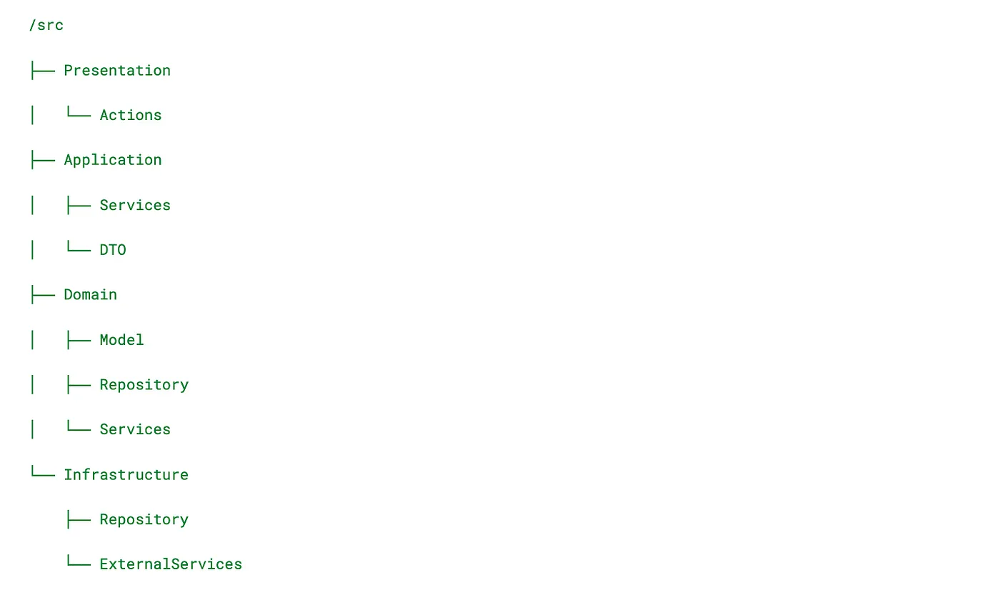

🔔 Introduction
A year-long story of development. Every developer eventually encounters legacy code — that old, often unclear, and sometimes intimidating set of lines that can be easy to get lost in. Legacy code can evoke mixed feelings: on the one hand, it’s the result of someone’s hard work and a part of the company’s history; on the other, it’s a constant challenge that demands not just maintenance but regular improvements. Turning such code into a polished, efficient system is no easy task, but it’s entirely possible.
In my case, the code came to us during the transition of a project from outsourcing to in-house development. Such situations often bring their own set of challenges: the transferred code may lack proper documentation, include temporary fixes, and fail to align with the company’s standards. It’s often the product of several teams, each potentially making changes without much thought for long-term maintainability. As a result, we inherited a classic example of legacy code — a tangled set of scripts that required thorough analysis and substantial refactoring to become a truly functional and sustainable system.
In this article, I’ll share how our team approached updating and modernizing this project, which took us an entire year to complete.
It should be noted that I am writing this article a year after the completion of the project, and perhaps some moments have already been erased from memory or remained behind the scenes.
🔖 Dictionary
- Legacy Code — refers to code written using outdated technologies that are no longer supported or considered inefficient. This type of code is challenging to modify or integrate with modern solutions.
- Technical Debt — code created to provide a quick solution without considering long-term maintenance or quality. It requires rework or refactoring to avoid becoming a barrier to the product’s growth.
- Code Without Tests — is often classified as legacy code as well. Without test coverage, such code is difficult and risky to change, as there’s no guarantee that modifying one part won’t break another.
- “Ball of Mud” — a term used to describe code that is so tangled it lacks clear structure and logic. Over time, such projects devolve into chaotic systems where each new module or function adds to the confusion.
- Unoptimized Code — refers to code that performs its task but does so inefficiently, consuming excessive resources and time.
- Rapidly Obsolete Code — sometimes, even recently written code can become legacy. Technologies and product requirements evolve so quickly that high-quality code written by an experienced developer just a month ago can turn into a “legacy.” This happens when the approaches used in the code no longer align with current standards or business goals.
- Hard-to-Maintain Code — code lacks proper documentation or its logic is overly complex, it can become legacy, even if it was crafted by experienced developers.
🎢 Project transition process
Formation of an internal team
During the discussion with the management, it was decided to allocate a separate team to transfer the project from outsourcing to internal development, as well as for further support and development of the project.
- Defining the Required Roles: Tech Lead, Tech Writer, 3 Backend Developers, 2 QA Engineers, 1 DevOps Specialist, and 1 Project Manager.
- Hiring Staff: Conducting interviews, and evaluating candidates’ skills and experience.
- Engaging Internal Employees: Temporarily transferring a Front-End Specialist from another team.
- Training: Training new employees on project specifics, technologies, and processes.
Creating a transition plan
- Defining Deadlines and Timelines. The project was divided into three phases with specific deadlines, spanning a total of three months. This structure allowed for progress monitoring and timely adjustments when necessary.
- Ensuring Business Continuity. All ongoing tasks had to be completed efficiently and delivered on schedule to keep the business running smoothly.
- Seamless Transition Execution. All changes were implemented so that end users would not notice any disruptions or face issues in the process. This minimized risks to the user experience.
- Establishing a Shared Chat and Communication Environment. A shared communication channel was set up to facilitate quick exchanges of information and maintain synchronization across teams.
- Identifying Risks and Minimization Strategies. Potential issues, such as code inconsistencies or conflicting approaches, were analyzed, and strategies to mitigate these risks were developed. One month was allocated for thorough analysis and preparation.
- Regular Team Check-ins. Weekly status meetings were held to discuss ongoing tasks, identify challenges, and coordinate work.
- Synchronization Calls with Both Teams. Weekly joint meetings with both teams were conducted to share updates on progress, current issues, and achievements. These meetings helped avoid misunderstandings and streamlined decision-making.
- Collaborative Development in a Unified Codebase. For a period, both teams worked in the same codebase. While this occasionally caused tension, a collaborative development phase was necessary for a successful transition. To ensure stability, no changes were made to the codebase for one month during this period.
- Backup and 1:1 Infrastructure Migration. Comprehensive backups of all systems and data were created, and the infrastructure was migrated to the new environment with minimal downtime. This step ensured data protection and availability in the new setup.
- Migrating Tasks to Jira. A new Jira project was created for the in-house team, or the existing project was reconfigured to align with the team’s requirements. Tasks and epics from the current project were transferred.
- User File Migration via CDN. A strategy was developed for transferring user files to internal servers or a new CDN.
- Updating Passwords and Access. An audit of current passwords and accounts used in the project was conducted, covering databases, APIs, third-party services, and tools.
- Preparing Final Documentation and Codebase Guidelines. Comprehensive and detailed documentation was created to make the transition as smooth as possible and to ensure successful and predictable ongoing maintenance.
- Post-Transition Review. A retrospective was conducted to discuss lessons learned and identify opportunities for improvement in future transitions.
Analysis of the current project state
- Infrastructure. Before the development team joined the project, our DevOps specialist was the first to grasp the full scale of the problem. One month before we even saw the code, they began studying the existing infrastructure, dependencies, servers, and databases to lay the groundwork for the team’s future efforts.
- Codebase Evaluation. Once we gained access to the repository, it became clear what we were dealing with. A thorough analysis of the existing code was conducted to identify technical debt and uncover architectural issues. I’ll go into more detail about this later.
- Documentation. You can probably guess what this section will say. That’s right — there was no documentation. All we could find were some broken Postman collections that only added to the confusion of an already challenging task. The Tech Writer played a critical role in the transition process. Throughout the project, they meticulously gathered information about all processes and created comprehensive documentation. Their efforts helped systematize knowledge, providing the team with access to necessary information and facilitating adaptation to the new environment. Thanks to their work, we avoided losing critical information and significantly improved the team’s understanding of internal processes.
- Processes. After analyzing the existing development processes, it became evident that they wouldn’t work for us. The current processes were, to put it mildly, unstructured: there were no clear guidelines for workflows, testing, deployment, or standards for the tools in use. Identifying the people responsible for specific tasks was extremely difficult.
- Team. In our assessment, the skills and experience of the outsourced development team matched that of beginner juniors, while the official documentation indicated they were hiring strong senior-level staff.
Implementation of processes
- Implementing Agile Development Methodologies. The first step was to choose an appropriate Agile methodology (Scrum, Kanban, or others) that would suit the needs of the team and the project. We chose Scrum.
- Establishing Coding Standards. Coding standards were defined, including rules for code formatting, variable naming, and writing comments to ensure consistency and code readability.
- Automation. Automation was introduced through plugins (Jira, Git) and tools for test automation, deployment, and monitoring.
- Version Control Systems. We migrated to a unified version control system (e.g., Git, SVN). Git-flow was selected as the primary Git branching model.
- Incident Manager Assignment. An incident manager was appointed to take responsibility for managing incidents, and identifying, and resolving critical issues promptly.
- Building a Tech Backlog. A technical backlog was created, including current tasks and necessary improvements based on code analysis and business requirements.
- Release Process Organization. A release format and process were established, along with communication protocols to keep the team informed about upcoming changes. This ensured readiness for updates and minimized potential issues.
Retrospective
- Timelines: The project deadlines were met — 3 months.
- Transition: A seamless transition was not achieved, leading to certain difficulties in the team’s adaptation to new processes.
- Incidents: Incidents occurred daily, highlighting shortcomings in testing and quality control prior to releases.
- Deployment Process: The deployment process remained semi-manual, increasing the risk of errors and slowing down updates.
- DevOps: The DevOps engineer did not pass the probation period and was dismissed, complicating the automation and process improvement efforts.
- Team: The team was well-assembled and cohesive, fostering open communication and collaboration.
- Domain Knowledge: Poor domain knowledge resulted in task timelines needing to be extended by a factor of two.
🏊 Deep Dive
The project has been transitioned to in-house development, and now the next phase begins — support and further development. Naturally, in its current state, accomplishing this would be extremely difficult, if not nearly impossible.
Delving into the code (though a different term might fit better here) — this process involves analyzing the existing codebase, identifying its strengths and weaknesses, and pinpointing areas for improvement. Gaining domain knowledge allowed us not only to address emerging issues more efficiently but also to implement changes following best practices and development standards.
Dockerization
To simplify project deployment on any OS for developers, the following steps were taken:
- A docker-compose.yml file was created.
- A Makefile was developed to automate commands.
- An install.sh script was created for quick project setup.
- Detailed instructions were added to README.md, including:
- Steps for installing Docker and Docker Compose.
- Guidelines for building and running the project using commands from the Makefile.
- Descriptions of potential issues and how to resolve them.
Following these steps, any developer can easily set up the project, regardless of their operating system.
Git
To organize work with Git, the following rules were developed and implemented to ensure a structured and efficient workflow:
- Transition to Gitflow: Gitflow is a branch management strategy that helps structure the development process. The main branches are main (or master) for stable versions and develop for active development.
- Squash before merging into the develop: Before merging changes into the develop branch, it's recommended to perform a squash, combining multiple commits into one. This helps keep the develop history clean and concise, improving readability and simplifying the tracking of changes, especially for long and complex developments.
- Branch naming conventions: New features, bug fixes, and release versions are developed in separate branches (feature/*, bugfix/*, hotfix/*, release/*), which makes version management and change tracking easier.
- Commits: Each commit should represent a single logical change and be accompanied by a clear message describing the nature of the changes. A webhook was created to enforce a consistent commit style:
#!/bin/bash
FILE=$1
MESSAGE=$(cat $FILE)
TICKET=$(git rev-parse --abbrev-ref HEAD | grep -Eo '^(w+/)?(w+[-_])?[0-9]+' | grep -Eo '(w+[-])?[0-9]+' | tr "[:lower:]" "[:upper:]")
if [[ -z "$TICKET" || "$MESSAGE" == "$TICKET"* ]]; then
exit 0
fi
NEW_MESSAGE="$TICKET: $MESSAGE"
echo "$NEW_MESSAGE" > $FILE
- Merge Request (MR) naming: Merge Requests should be named according to established rules using the task number from JIRA and its description (e.g., AMG-33: task name). This helps link changes to the corresponding tasks and simplifies tracking.
Technical documentation
Technical documentation was created. It gave the team a clearer understanding of the system and helped developers and engineers understand how the system works, and what its capabilities and limitations are. Provided instructions for installation, configuration, architecture, and code. It served as a guide not only for users but also for developers, helping them master new systems and programs.
Logging
To optimize logging in the project, the following rules were developed and implemented:
- Standardizing log format: A standard log format was defined, including key fields such as timestamps, logging levels (info, error, warning), request identifiers, and other important information. This makes it easier to analyze logs, search for errors, and understand the sequence of events. A unified format makes the logs more structured and convenient for searching.
- Removing unnecessary logs and adding necessary ones: An audit of the existing logs was performed: redundant and duplicate entries were removed, and important logs necessary for tracking key actions and processes were added. This helps reduce the amount of stored data, making the logs more concise and informative, while also improving system performance.
- Request logging: Logging of all incoming and outgoing requests/responses was enabled to track every step of interaction with the system. This is especially useful for diagnosing issues and analyzing system behavior in case of errors. Request and response logging includes information about headers, URLs, query parameters, and response statuses, which helps quickly find and fix errors in integrations and APIs.
- Splitting log channels by levels and types: Separate channels were created for different types of logs, such as info, error, debug, warning, and critical. This allows more flexible control over the level of detail and quick filtering of logs based on importance.
- Creating separate channels for key components: Logs were split into channels reflecting the main system components: request, response, database, auth, payment, console, api, etc. This allows focusing on logs for specific components, simplifying analysis and troubleshooting.
Application Architecture
I want to say that the implementation of a layered architecture was a preparation for transitioning to a DDD (Domain-Driven Design) architecture with a domain focus. It would have been very difficult to make such a leap from the beggining without knowledge of the domains and their boundaries.
The introduction of a layered architecture helped to structure the project, improve code readability, and simplify its maintenance. The transition from a chaotic folder organization to a layered architecture involved several steps.
Selecting the main layers
- Presentation (or Interface) Layer — contains logic related to the user interface (e.g., API controllers and web controllers).
- Application Layer — responsible for orchestrating business logic, handling commands, and invoking necessary services, but does not contain business logic itself.
- Domain (or Business) Layer — includes business logic and core rules. This layer contains entities, interfaces, and other components that describe business processes.
- Infrastructure Layer — responsible for interacting with external systems and resources: databases, file systems, and external APIs. This layer handles the technological aspects of the system.
Organizing the code structure
Structure the folders in your project according to the selected layers.
Move from Controllers to ADR
The transition to the ADR (Action-Domain-Responder) pattern became a key step in improving code structure and readability. Instead of large controllers containing a lot of logic, we implemented the following approach:
- Action: Handles incoming requests and interacts with the domain. This component is responsible for extracting the necessary data and executing business logic.
- Domain: Contains business logic and models, including rules and data validation. The domain model remains independent of external technologies and infrastructure.
- Responder: Forms the response for the client. This component is responsible for presenting data and may include logic for formatting different response types, such as JSON or HTML.
With the transition to ADR, our controllers became lighter and more specialized. Each controller now only performs functions related to routing and passing control between Action and Responder, which simplifies the code and makes it more readable.
Simplified Testing
By dividing the logic into three components, testing became more manageable. We can test each part (Action, Domain, Responder) separately, which simplifies debugging and increases the reliability of the code.
Flexibility and Scalability
The ADR structure allows for easier addition of new actions and modification of existing ones, as changes in one component do not affect others. This makes the code more adaptable to changes in business requirements.
Improved Code Understanding
Clear separation of components based on their responsibilities makes the code more understandable for new developers, as they can quickly navigate the application’s structure and understand where to find specific functionality.
Working with the Application Layer
Using CQS and the Use Case approach in the Application Layer significantly improved the architecture of our application. It allowed us to separate read and write commands, which helped improve performance and simplify the management of business logic.
Working with the Infrastructure Layer
- Working with Queues: To ensure that the message structure in the queue is predictable and easy to process, implement a unified message format. A middleware layer serves as an intermediary between the application’s logic and the specific queue implementation. It abstracts the implementation details, allowing developers to focus on business logic.
- Access to the Database via the Repository Pattern: Repositories perform data operations and provide interfaces for working with specific entities. Create interfaces for each repository that will describe data access methods. Implement the interfaces in repositories that will perform database operations via ORM or SQL queries. This increases the flexibility of the code and simplifies testing and implementing changes.
- Middleware Layer for MessageBus: For working with the MessageBus, we added an intermediate layer to manage sending and processing messages. This layer acts as an intermediary between the application logic and the actual MessageBus calls, manages message serialization/deserialization, handles exceptions and logs errors, supports a unified message format, and provides standardized interfaces for sending messages. This also simplifies testing.
- Transition to EightPointsGuzzle: The EightPointsGuzzle library provided a convenient integration layer with Guzzle for Symfony, offering standard middleware for logging, error handling, and request tracking. Using this package allows reducing the complexity of working with external APIs by providing a single client for HTTP requests, configuring common middleware for all requests, and easy integration with Symfony services and configuration.
Working with Domain
As we studied the domain together with the team, we began to form subdomains and identify bounded contexts. This allowed us to more accurately define the boundaries of responsibility for each module, improve the structuring of business logic, and simplify the work with individual components of the system. As a result, each subdomain came to represent a distinct part of the domain, with its own rules, entities, and interactions, which facilitates both the maintenance and the development of the project.
Dependency Injection
- Accessing services via DI: Instead of obtaining services directly from the container, we use dependency injection to pass the necessary services into classes via constructors or methods. This allows seeing which dependencies each component requires and simplifies testing, as dependencies can easily be swapped with mock objects.
- Accessing parameters via DI: Configuration parameters are also passed through dependency injection. This avoids tight coupling with the container and makes classes more independent. As a result, components become more modular and reusable, and managing settings and configurations is simplified.
- Disallowing container usage: We prohibited the use of the container in classes and methods. This means components cannot directly access the container to fetch dependencies. These measures allowed eliminating the dependency on the container, simplifying testing, and increasing the level of abstraction.
Dependency injection enables a more maintainable and flexible architecture, which in turn improves code quality and boosts the development team’s productivity.
Security
- Moving from parameters to environment variables (env): We replaced the use of configuration parameters with environment variables. This allows us to store sensitive information, such as API keys and passwords, outside of the code and configuration files, significantly reducing the risk of leakage.
- Removal of passwords from the git repository: All passwords and confidential data were removed from the repository. Instead, we now use environment variables to store this information. This ensures data protection and prevents accidental disclosure when working with version control systems.
- Moving SQL queries from code to repositories: SQL queries were moved into separate files or repositories. This not only improves the structure of the code but also allows us to apply best practices, such as using migrations to manage the database schema and data.
- Use of encryption for confidential information: We implemented encryption for storing and transmitting confidential information. This helps protect data even in the case of a breach. For example, libraries for encrypting passwords and storing tokens can be used.
- Regular security audits of the code: We started conducting regular security audits of the code using static analyzers and tools to check for vulnerabilities. This helps identify potential issues before they become serious threats.
- Authentication and authorization: We improved authentication and authorization mechanisms by implementing two-factor authentication (2FA) and updating resource access policies. This provides an additional layer of protection and prevents unauthorized access.
- Logging and monitoring: We implemented logging and monitoring systems to track suspicious activities and potential security threats. This allows for timely responses to incidents and facilitates investigations.
- Removal of secrets from logs: We introduced a mechanism to filter and remove confidential information (such as passwords and tokens) from logs. This prevents unauthorized access to sensitive data that could accidentally be written to log files.
These measures significantly improved the security of our project, reduced risks, and protected confidential data.
Refactoring
- Removal of non-working tests: All non-functional and outdated tests were removed, which improved the quality of test coverage and increased confidence in the stability of the code. This also freed up time to write new tests covering relevant functionalities.
- Removal of unnecessary commands and consumers: Unused commands and consumers that were no longer practically applicable were removed. This improved code readability and reduced complexity, making further development and maintenance easier.
- Removal of dead code and comments: All dead code and outdated comments were removed, making the code cleaner and more understandable. This contributes to better comprehension of the application’s logic and facilitates maintenance by new developers.
- Refactoring and simplifying the code structure: Refactoring of existing code was done to simplify its structure and improve readability. This includes breaking large functions into smaller ones, and renaming variables and classes for better clarity.
- Updating Swagger documentation: We performed a complete update of the Swagger documentation for our API. This includes adding new endpoints, updating descriptions and examples, as well as fixing errors in existing documents. The updated documentation provides a more accurate representation of the API functionality and simplifies the work for developers using it.
- Setting up Postman collections: We created and configured Postman collections for automating API testing. This allows the team to easily execute requests, test new functionalities, and share them with other team members. The collections also include tests for verifying API responses, which helps in faster issue detection and improves code quality.
- Renaming cron tasks: We reviewed cron tasks and renamed them for greater clarity and consistency with common naming standards (add cron: before each command). This simplifies understanding the purpose of each task and eases their maintenance. Renaming tasks also helps avoid confusion, especially in environments with a large number of scheduled operations.
Working with Domain
As we studied the domain together with the team, we began to form subdomains and identify bounded contexts. This allowed us to more accurately define the boundaries of responsibility for each module, improve the structuring of business logic, and simplify the work with individual components of the system. As a result, each subdomain came to represent a distinct part of the domain, with its own rules, entities, and interactions, which facilitates both the maintenance and the development of the project.
Performance Improvements
- Performance Analysis: We conducted a performance analysis of the website using monitoring tools, which allowed us to identify bottlenecks and areas for optimization.
- Resource Loading Optimization: Images, fonts, and other static resources were optimized. This includes compressing images and using modern formats such as WebP, which reduces page load times.
- Caching: We implemented caching at both the server and client levels. Using cache headers and caching static resources significantly reduces the number of server requests and speeds up page load times for users.
- Minification and File Concatenation: CSS and JavaScript files were minified and concatenated to reduce the number of HTTP requests and the total size of the resources being loaded.
- Using CDN: We deployed a CDN to deliver static content, which helps reduce response times by using servers closer to the user.
- Database Optimization: Database queries were optimized, including indexing, removing unused data, and simplifying complex queries.
- Deadlock Prevention: We analyzed and optimized database operations to prevent deadlocks. This includes optimizing the order of transaction execution and using timeouts to avoid mutual locks, which improves overall system performance.
- Code Optimization: Refactoring was done to eliminate redundancy and increase code efficiency. This includes removing dead code and optimizing the algorithms used in the application.
- Performance Monitoring: We set up monitoring systems to track the performance of the website in real time. This helps quickly identify and address performance issues.
- Load Testing: Load tests were conducted to determine the website’s maximum performance and identify points that may cause failures as the number of users increases.
These measures have significantly improved the website’s performance, making it more resilient to increased traffic and enhancing the user experience.
DB (MySQL)
- Standardization of Field and Table Names: We standardized the names of fields and tables to a consistent style using camelCase to improve readability and consistency. This simplifies understanding of the database structure and helps developers navigate the code more quickly.
- Adding Foreign Keys: A review of fields with identifiers was conducted, and foreign keys were added where they were missing. This helped ensure data integrity and improved the reliability of interactions between tables.
- Unified Naming Convention: A unified naming convention was applied to all database entities, improving consistency and simplifying ongoing maintenance. This is especially important in large projects where multiple developers are involved.
- Merging Migrations: More than 1,000 migrations were merged into one, simplifying the process of updating the database schema in the future. This reduced the likelihood of errors when executing old migrations and made the application startup process more manageable.
- Replacing Static Tables to Enum(s): Static tables were replaced with Enum(s), which improved performance and simplified data management, especially for fields with a limited number of values. This also reduced data redundancy and enhanced readability.
- Adding Indexes for Frequent Queries: Indexes were added to fields that are frequently used in queries, significantly increasing the speed of read operations. After analyzing queries, outdated indexes that were no longer in use were removed, reducing overhead for database maintenance.
- Optimizing Queries: SQL queries were optimized to reduce execution time and the load on the database. This included reworking complex queries and using JOINs instead of subqueries where possible.
- Regular Performance Monitoring: Monitoring tools were set up to track database performance, allowing for the quick identification of bottlenecks and prompt actions to address them. This contributes to more stable application performance and better user service.
NoSQL (MongoDB)
- Technology Stack Reduction: It became clear that MongoDB was chosen based on hype and was not used for its intended purpose. Therefore, we created a plan to reduce the technology stack.
- Data Schema Optimization: We removed some tables and redesigned the remaining ones to improve data structure and reduce duplication.
- Feature Assessment: We assessed which features of MongoDB were being used in the project and how they could be implemented using other databases that are already in use.
- Codebase Update: We updated the application code to remove dependencies on MongoDB.
🏫 Infrastructure
- Enabling VPN for Internal Resources: VPN configuration ensures secure access to the company’s internal resources for employees. This helps protect data and maintain confidentiality when working with sensitive information.
- Migration of Services to Amazon Cloud: The process of migrating existing services to the Amazon Web Services (AWS) cloud infrastructure is underway. This allows for the use of scalable resources, improving application availability and optimizing server maintenance costs.
- Replication Settings for Key Elements: Replication settings have been established for critical data and services. This ensures high availability and fault tolerance, as well as protection against data loss in case of failure.
- Creation of Staging Environments for Internal Development: Staging environments have been created for testing and developing new features. This allows developers to safely check changes before they are deployed to the production environment, minimizing risks and ensuring application stability.
- Redis Cluster Setup: A Redis cluster has been deployed to improve performance and fault tolerance of data caching. This enables efficient handling of high loads and provides fast access to frequently requested information.
- Migration of Logs to Elasticsearch: System logs have been migrated to Elasticsearch for centralized storage and analysis. This ensures easy access to data, allowing for convenient searching and visualization of performance data and system issues.
Separation of logs and business data in Elasticsearch: A separate Elasticsearch for business data was created.
🔧 CI/CD Settings
- Gradual CI Setup: CI integration was gradually added to increase automation in the development process (csfixer, phpstan (9-level), psalm, deptrac, unit/functional tests).
- Reducing Deployment Time: Optimizing processes to reduce the time needed to deploy applications.
- Combining Deploy and Build Buttons: Merging deployment and build actions into one button for simplified deployment and build processes.
- Moving Migrations from Deployment to Build: Migrations were moved to the build process to improve version control management.
- Blue/Green Deployment Issues: Faced challenges when implementing the blue/green deployment approach.
- Night-time Staging Runs: Running staging environments at night for testing and development.
- Resource Optimization on Staging: Optimizing resource usage to save costs.
- Nightly Cron Jobs Setup: Configuring automated tasks to run during the night.
- Jira + GitLab Integration: Linking systems to enhance project and task management.
- Disabling Commits to Master: Establishing a policy to prevent direct commits to the master branch.
- Automatic Tagging: Configuring automatic version tagging during deployments.
- Automatic Release Version Updates in Sentry: Automatically updating version information in Sentry.
- Automatic npm Build on Front-end Changes: Setting up automatic builds for npm packages when changes occur on the front end.
- Resource Shortage Issues: Ongoing resource shortages were addressed through vertical scaling and identifying memory leaks in the code.
- Alert Configuration: Configuring the alert system to monitor the status of applications.
- Moving Cron and Supervisor Configuration to Repository: Organizing configuration for task and process management.
- Kubernetes Version Updates: Regular updates to ensure stability and security.
🏁 Conclusion
The process of transforming the legacy project turned out to be filled with challenges and unexpected difficulties, both for the team and for the business. We had to solve numerous technical and organizational problems, rethink the architecture, and adapt old solutions to meet modern requirements. Thanks to our efforts and perseverance, we managed to turn the project into a truly “sweet spot” — a stable, flexible, and user-friendly system, ready for further development and support.
Exactly one year has passed since the transition, and it took us this long to complete the transformation. Throughout this time, business tasks were performed in parallel with technical changes, without pauses or noticeable inconveniences for users.
That’s it 🎉, thanks for reading!